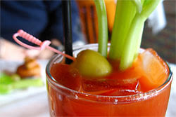

10 ricette dei cocktail più famosi da fare a casa | ALDI
 Jump to navigation [ALT+1] Jump to content [ALT+2] Home ALDI International Carriera Punti vendita Contatti Newsletter La mia spesa menu Espandi Riduci Offerte Offerte da lunedì 21 giugno Offerte Freschezza dal 21 giugno Offerte da giovedì 24 giugno Offerte weekend dal 25 giugno Offerte nuova apertura Rimini Offerte da lunedì 28 giugno Offerte Freschezza dal 28 giugno Offerte da giovedì 1 luglio Offerte weekend dal 2 luglio Volantino Online Espandi Riduci Assortimento PREZZO ALDI Espandi Riduci Marche esclusive Espandi Riduci Vini selezionati Il nostro analista sensoriale Espandi Riduci Dal Produttore al Carrello Espandi Riduci Servizi Richiamo prodotto Espandi Riduci Insieme ce la facciamo Punti vendita e orari di apertura Espandi Riduci Media Newsletter Espandi Riduci Informazioni e servizi Servizio clienti Espandi Riduci ALDI Sitemap Espandi Riduci Ricette selezionato Espandi Riduci Antipasti Espandi Riduci Primi Espandi Riduci Secondi Espandi Riduci Dolci Espandi Riduci Veloci Espandi Riduci Vegetariane Espandi Riduci Free from Espandi Riduci Cocktails Aperol Spritz Bloody Mary Daiquiri Martini Cocktail Mint Julep Mojito Moscow Mule Old Fashioned Sangria Whiskey Sour Originali Espandi Riduci Feste Espandi Riduci Halloween Espandi Riduci Rubriche Espandi Riduci Consigli in cucina Espandi Riduci Idee originali per il giardinaggio Espandi Riduci BIO è buono Espandi Riduci Come risparmiare Che cosa è il decluttering Etichetta alimentare: ecco come leggerla Espandi Riduci Grigliata in allegria Espandi Riduci Azienda Espandi Riduci Chi siamo Qualità Sostenibilità - Oggi per domani Lavora con noi Immobili Espandi Riduci Ufficio Stampa ti trovi qui Home Ricette Cocktails Antipasti Primi Secondi Dolci Veloci Vegetariane Free from Cocktails selezionato Originali Feste Halloween10 cocktail più famosi da fare a casa con ricette semplici e veloci
Sei in cerca di idee per stupire i tuoi ospiti con briosi cocktails per aperitivo o altre occasioni conviviali ? Alcuni drink alcolici possono essere preparati davvero in pochi minuti… scopriamo insieme quali sono i migliori 10 cocktail alcolici da servire ai tuoi amici e parenti per aperitivi sfiziosi e frizzanti serate in casa. Abbiamo stilato una lista di cocktail, tutti da preparare con i migliori ingredienti selezionati da ALDI .
Sangria
La Sangria è tra gli aperitivi alcolici spagnoli più noti e apprezzati di sempre, perfetta per colorare la tavola durante una festa tra amici. Segui la nostra ricetta per preparare un cocktail per un aperitivo davvero gustoso a base di frutta fresca, una bottiglia di vino rosso, un bicchierino di rum e qualche altro ingrediente segreto.
Mojito
Il Mojito è uno dei cocktail più famosi e apprezzati in tutto il mondo. Fresco e leggero, è un cocktail con rum bianco e acqua gassata, zucchero di canna e poche foglie di menta: facile ed economico, da provare subito!
Martini cocktail
Con il Martini è possibile preparare tanti cocktails da aperitivo, come il Dry Martini e molte altre varianti . Per fare un ottimo Martini cocktail basterà un po’ di Vermut dry mixato insieme con gin, ghiaccio, una scorza di limone e la classica oliva verde come decorazione fondamentale.
Moscow Mule
Il Moscow Mule è tra i cocktails facili molto di voga in questo momento: unendo insieme Lemon, menta, lime e zenzero potrete portare in tavola un cocktail con vodka liscia e ghiaccio davvero fresco e sfizioso.
Whiskey Sour
Questa è la ricetta di un cocktail ideale per chi ama le note acide tipiche di questo distillato, con aggiunta di succo di limone e di sciroppo per dolcificare. Se vuoi optare per la preparazione di un aperitivo particolare, ma comunque molto semplice, il Whiskey Sour fa proprio al caso tuo.
Aperol Spritz
Lo Spritz è l’ aperitivo con Aperol per eccellenza ed è tra i cocktail poco alcolici più amati dagli italiani. Non a caso risale all’inizio dell’800, durante la dominazione austriaca del Lombardo-Veneto, ma solo negli anni ‘20 è stato introdotto nella sua preparazione anche l’Aperol, con la sua inconfondibile nota color arancio . Aggiungi due patatine in busta alla tua tavola e avrai un cocktail fatto in casa per un aperitivo da 10 e lode.
Daiquiri
Il daiquiri va molto di moda come cocktail da discoteca , specialmente in estate. Nelle ricette per cocktails è considerato più un long drink per il quale servono davvero pochi ingredienti ma, seguendo la nostra ricetta, ne potrai preparare uno con i fiocchi.
Mint Julep Cocktail
Il Mint Julep è perfetto sia in estate che in inverno ed è un drink molto dissetante : per capire come fare il cocktail in modo impeccabile è sufficiente munirsi di tutti gli ingredienti ALDI e seguire le nostre semplici indicazioni.
Bloody Mary
Il Bloody Mary è tra i cocktail alcolici più famosi di sempre, ideale come aperitivo serale ma perfetto anche se consumato durante il brunch o al mattino. È tra i cocktail più facili da fare , se puoi contare su ingredienti di prima scelta, e non dimenticare di seguire con attenzione le dosi che ti consigliamo.
Old Fashioned
A base di whisky, l’Old Fashioned è un cocktail davvero immortale che deve il suo nome al particolare bicchiere in cui viene servito nei bar di tutto il mondo. Per prepararlo bastano pochi semplici ingredienti: scorza d’arancia e ciliegina come decorazione lo rendono il drink perfetto anche per i palati più sofisticati amanti del buon whisky.
torna all'inizio della pagina Stampa pagina Social bookmarks